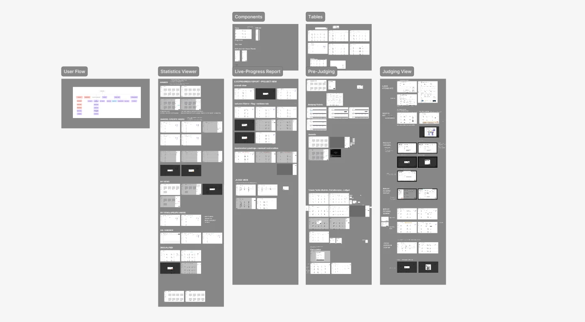
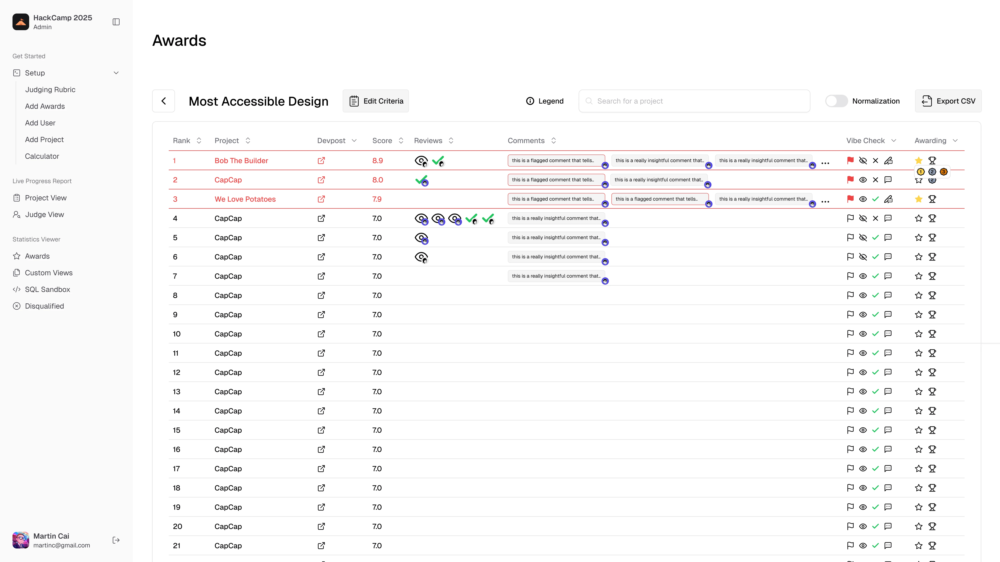
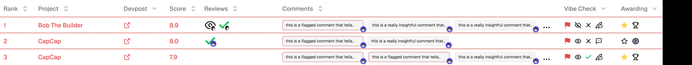

Hackathon Judging Portal
Designed a centralized project-review and winner-selection workflow for nwPlus's 54-person organizing team and seasonal judges, supporting three annual hackathons with 1,000+ attendees.
The problem
nwPlus is a student-run organization that runs Western Canada's largest hackathons. With hundreds of participants and projects, judges had to grade hundreds of individual submissions in Google Sheets while organizers managed the whole process by hand. It was inefficient, confusing, and largely repetitive.
The old workflow


My team and I conducted focus group sessions and interviews with 8 participants including previous judges and organizers to validate and further understand the problems of the existing system.
Those discussions turned into these core findings:
Efficiency
Judges entered scores across multiple sheets, while organizers manually compiled and verified results. Frequent onboarding, incorrect entries, and broken formulas slowed the process.
Centralization
Judging and organizer processes happened in separate sheets. The entire judging process was scattered across different modes, making information hard to find and understand.
Clarity & collaboration
Only certain organizers understood the status of judging and what the results meant. Eligibility and compliance checks with confusing and little documentation also made it difficult to involve others and explain winner decisions.
This created stress during the most time-sensitive moment of the event, and made it hard to explain why certain projects were considered for winning.
So we asked:How might we bring judging and award decisions into one clear workflow, so judges can submit and update scores easily while organizers can quickly and fairly select winners?
Ideation
We started to answer this by using our research insights to create a user flow that represents the overarching judging process: from judges grading each individual project all the way to organizers selecting winners.

The end-to-end judging workflow.
My design challenge:How can I help hackathon organizers turn messy project data into decisions they can trust and act on quickly?
From then on I began creating low and mid-fidelity prototypes for this workflow. Throughout the process we held weekly design critiques and discussions with the developers and the PM to refine the scope.

During the mid-design stage, I conducted group walkthroughs with 5 organizers to see if their mental model of reviewing projects matched with the workflow I had designed.
Originally we had a simple flagging and winner choosing system, where organizers could select winners by locking in a project, or mark a project as suspicious by flagging it.

Before
However we figured a traceable review system made award decisions easier to explain, thus the multi-step review system was born.



After
The revised system gives organizers four actions on any project: viewing it, approving it, flagging it, or starring it. They can also leave comments directly on a project.
I also added markers for whoever completed each action, so that organizers can see the decision history for internal transparency.
On the visual side, the signifiers for flagged projects and winners weren't working as intended.
Users said it was easy to miss when a project was flagged because the current flag icon didn't stand out enough. To fix this, I added a stronger visual state: a red highlight around flagged rows plus a clearer flag icon.

Before

After
What I Shipped
The system is prepopulated with different awards.

Organizers can view each award individually to see the projects ranked based on its criteria and other related project data.

They can flag projects as suspicious, view and approve a project, as well as make comments.

To select winners, organizers can star a project as a potential winner, or lock one in as different placements.


This mattered because winners used to be selected ambiguously through a few organizers, and the news was then delivered to the entire team verbally, which lacked transparency and at times caused disagreements.
Reflection
Be ready to reinvent your workflows.
When conducting research, we found a lot of variation in the data collected, thus leading to many possible solutions. Due to this, we tested many iterations of the portal. I learned that it's important to be able to let things go despite the time sunk into building. This helped me realize the benefits of iteration: it creates a better product.
Have a firm grasp when conducting user research.
Time your discussions and interviews; this project required hours of discussion with different stakeholders and user groups. Generally people had a lot to say. It was important for me to step in when conversations go off on tangents to protect everyone's energy and keep the discussions productive.